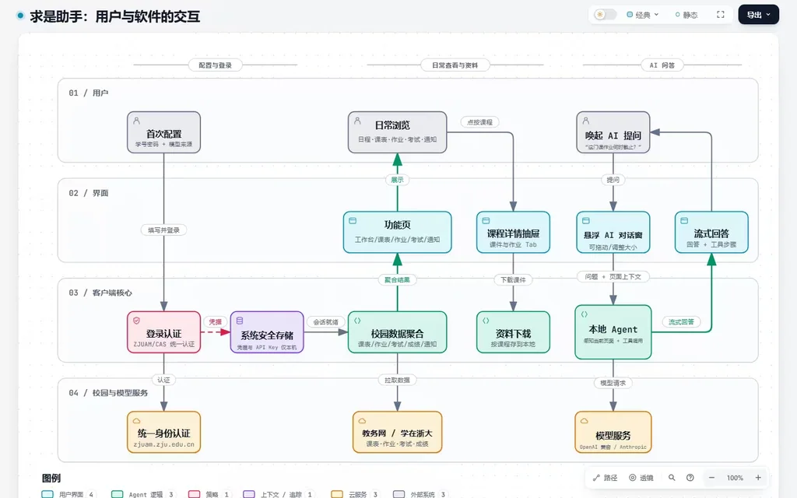

返回软件项目索引
返回软件项目索引S04 / 软件团队 · 软件展示
ZJU Agent
档案封面选自项目交互流程图。
1. 项目基本定位：
求是助手（ZJU Campus Agent）是一款本地优先的浙江大学校园智能助手，针对学在浙大、教务网、素拓网等平台信息分散、需要反复切换的痛点，将统一身份认证、课表、作业、考试、成绩、通知和课件资料聚合至同一应用内。
2. 核心功能设计：
（1）完成一次登录后，首页将直接展示未来 48 小时日程、学业快览和待办作业。
（2）课表支持按学期查看并导出，点按对应课程即可查看详情与课件。
（3）所有资料按课程分类下载至本地存储。
（4）应用接入大模型，悬浮 AI 对话窗可感知用户当前所在页面，支持通过自然语言查询“这门课作业何时截止”这类问题。
（5）Windows 端额外配备可显示日程的桌面挂件。
3. 技术与开发进展：
（1）项目基于 Flutter 开发，账号密码与模型 Key 仅存储在本机系统安全存储区域，所有数据不上云。
（2）项目主要功能已全部实现，Windows 端可正常编译运行，目前仍在推进界面对齐与手机端验收相关工作。
